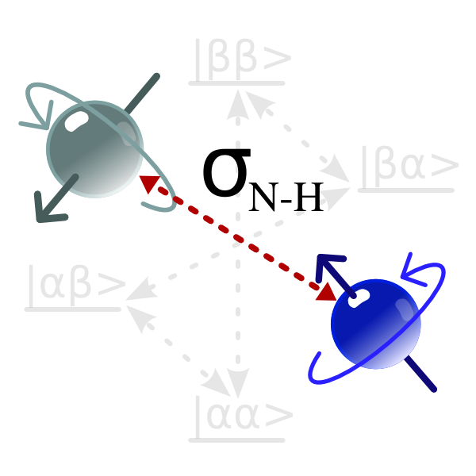

Next:
Introduction to the steady-state
Up:
The specific analyses
Previous:
Final checks of the
Contents
Index
Calculating the NOE

Subsections
Introduction to the steady-state NOE
From spectra to peak intensities for the NOE
Calculation of the NOE in the prompt/script UI mode
NOE script mode - the sample script
NOE script mode - initialisation of the data pipe
NOE script mode - setting up the spin systems
NOE script mode - loading the data
NOE script mode - setting the errors
NOE script mode - unresolved spins
NOE script mode - the NOE calculation
NOE script mode - viewing the results
The NOE auto-analysis in the GUI
NOE GUI mode - initialisation of the data pipe
NOE GUI mode - general setup
NOE GUI mode - setting up the spin systems
NOE GUI mode - unresolved spins
NOE GUI mode - loading the data
NOE GUI mode - the NOE calculation
The
relax
user manual
(
PDF
), created 2016-05-13.